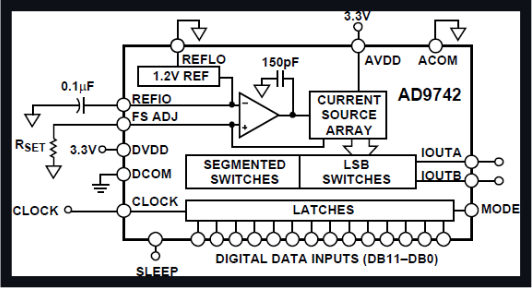

Version: 1.1 (May 2026, Option A redesign) Module ID: 1E Tier: 1 Status: In Design Parent SDD section: 7.5.5 of the PMVB System Design Document
Module 1E generates analog waveforms for amplifier characterization, in-ear monitor and headset testing, clock generation for digital interfaces, and any test sequence that needs a controlled stimulus into a DUT. The module is built on a single Pico 2 W presenting as a USB-TMC instrument to the Pi 5 host; calibration constants live in the Pico's onboard 4 MB flash. The design pairs the Pico with an Analog Devices AD9742 12-bit 210 MSPS current-mode DAC, an AD8056 high-speed differential-to-single-ended op-amp output stage, a 5th-order Butterworth reconstruction filter, and a three-position output impedance switch (50 Ω / 600 Ω / 10 kΩ). Single-channel BNC output, ±10 V swing, DC to 10 MHz signal range.
A precomputed waveform sample table sits in the Pico's flash or is generated on the fly in SRAM. The Pico's PIO (Programmable I/O) state machine, paired with DMA, streams 12-bit samples to the AD9742's parallel data port at up to 50 MSPS. The AD9742 outputs a complementary differential current pair (IOUTA, IOUTB), which drives 25 Ω termination resistors to AGND to convert the current to a differential voltage. A 5th-order Butterworth low-pass filter at ~12 MHz cutoff smooths the DAC stair-step output, then an AD8056 op-amp configured as a differential receiver with gain converts to single-ended ±10 V output. The single-ended signal passes through a three-position impedance switch (50 Ω / 600 Ω / 10 kΩ) to a front-panel BNC.
For a 1 kHz sine wave at 50 MSPS DAC update rate, the waveform has 50,000 samples per cycle: many orders of magnitude above the Nyquist requirement, with quantization noise dominated by DAC INL/DNL rather than oversampling ratio. At 10 MHz output the DAC produces 5 samples per cycle (5× oversampling), and the reconstruction filter rejects the first image (at 50 − 10 = 40 MHz) by approximately 50 dB. A ±10 V sine at 10 MHz requires roughly 628 V/µs slew at the op-amp output, well within the AD8056's 1400 V/µs spec.
The AD9742 is a current-output DAC with a parallel data interface: 12 data bits plus a clock line. This trades two things for two others, compared to a SPI-driven DAC like the MCP4922:
For practical AWG use cases (single tones via phase-accumulator DDS in firmware, swept sines, multitone, pseudo-random noise, simple arbitrary waveforms up to a few kSPS), the trade-offs land favorably on the AD9742's side.
The output stage can present three source impedances, selected by three SPST reed relays gated by Pico GPIOs (only one energized at a time):
The module exposes one auxiliary digital output that can be configured as a sync pulse (rising edge at the start of each waveform period) or a continuous gate. This output ties to the chassis-wide trigger bus (see SDD section 11.4) so captures on Module 2E (Mixed-Signal Digitizer) can be synchronized to AWG output without software-arming jitter. The module also accepts a trigger input from the same bus, allowing the AWG to start its waveform on an external event.
Module 1E is documented across three figures: a system-level view showing where the module sits in the PMVB chassis, the AD9742 internal block diagram (from the datasheet), and a typical-application schematic showing the parallel data path, current-to-voltage conversion, reconstruction filter, op-amp output stage, and impedance switching.
Figure 1E-1: Module 1E system context (system block diagram)

Figure 1E-2: AD9742 internal functional block diagram

Source: AD9742 datasheet (Rev. C), page 1. Analog Devices Inc. Used under fair-use citation for technical reference.
Figure 1E-3: Module 1E typical application schematic

Schematic shows the parallel data interface from Pico to AD9742, the differential current outputs through 25 Ω termination resistors and the 5th-order Butterworth reconstruction filter, the AD8056 differential-to-single-ended op-amp converter with gain to ±10 V, and the three-position SP3T impedance-switching network feeding the BNC output.
The AD9742 produces complementary differential currents at IOUTA and IOUTB. Full-scale current is set by an external precision resistor at the FSADJ pin (per the AD9742 datasheet section "Reference Operation"); we use a 1.91 kΩ ±0.1% resistor to set FS_CUR ≈ 20 mA. Each output drives a 25 Ω 0.1% precision termination resistor to AGND. The differential voltage swing at the op-amp input is therefore ±0.5 V peak across each 25 Ω resistor (depending on the digital input code), giving a 1 V differential signal that the op-amp scales to the final ±10 V single-ended output.
A 5th-order Butterworth low-pass filter sits between the DAC's differential output and the op-amp input. Cutoff at ~12 MHz, characteristic impedance 50 Ω. Standard ladder topology (L–C–L–C–L) with the values:
Tabulated normalized Butterworth values are in the Analog Devices DAC application note AN-282 and equivalents; tolerances on these passives directly affect passband ripple, so 5% C0G capacitors and ±5% wirewound chip inductors are the minimum specifications. Better tolerances (1% caps, 2% inductors) produce flatter passband response if budget permits.
The AD8056 channel A is configured as a difference amplifier:
Differential gain of 10 takes the 1 V differential filter output to 10 V single-ended. Adjustment to the gain network shifts the output range; for ±10 V output, the gain is 20 (factoring in the differential signal centered at midscale).
The AD8056 is rated for ±5 V to ±13.5 V supply (refer to the datasheet Absolute Maximum Ratings). We power it from the chassis TX300 PSU's +12 V and −12 V rails, giving comfortable headroom for the ±10 V output swing. The op-amp's 1400 V/µs slew rate provides about 2.2× margin for the worst-case full-amplitude 10 MHz sine (which needs 628 V/µs), so harmonic distortion from slew limiting is negligible.
Three Coto 9007-05-01 SPST-NO reed relays (5 V coils, signal-grade) sit between the op-amp output and three different series resistors:
Pico GPIO drives each relay through a 2N3904 transistor and a 1N4148 flyback diode across the coil. The Pico firmware enforces "only one relay energized at a time" so the BNC sees exactly one source impedance. Reed relays were chosen over solid-state analog switches because their on-resistance is essentially zero (no series error added to the 50 Ω termination), they have signal-grade isolation in the off state, and they handle bidirectional signals cleanly.
Every IC supply pin gets a 0.1 µF X7R 0603 ceramic placed within 4 mm of the pin. The AD9742 additionally gets a 10 µF 10 V X5R bulk cap at the supply entry per the datasheet section "Power Supply Bypassing." AVDD and DVDD pins are decoupled separately with their own 0.1 µF caps to avoid digital noise coupling into the analog reference. The op-amp gets two 0.1 µF caps (one per supply rail, V+ and V−) plus a shared 10 µF bulk cap.
The Pico's PIO state machine drives 12 contiguous GPIOs as the parallel data bus, plus one GPIO for the DAC clock. Using GP0–GP11 for data keeps the PIO instruction simple (single shift register output to a contiguous pin range).
| Pico Pin | GP | Function | AD9742 Pin | Notes |
|---|---|---|---|---|
| 1 | GP0 | DB0 (LSB) | 12 | parallel data bit 0 |
| 2 | GP1 | DB1 | 11 | parallel data bit 1 |
| 4 | GP2 | DB2 | 10 | parallel data bit 2 |
| 5 | GP3 | DB3 | 9 | parallel data bit 3 |
| 6 | GP4 | DB4 | 8 | parallel data bit 4 |
| 7 | GP5 | DB5 | 7 | parallel data bit 5 |
| 9 | GP6 | DB6 | 6 | parallel data bit 6 |
| 10 | GP7 | DB7 | 5 | parallel data bit 7 |
| 11 | GP8 | DB8 | 4 | parallel data bit 8 |
| 12 | GP9 | DB9 | 3 | parallel data bit 9 |
| 14 | GP10 | DB10 | 2 | parallel data bit 10 |
| 15 | GP11 | DB11 (MSB) | 1 | parallel data bit 11 |
| 16 | GP12 | CLOCK | 17 | DAC sample clock from Pico PIO |
| Pico Pin | GP | Function | Notes |
|---|---|---|---|
| 17 | GP13 | RELAY_50 | drives 2N3904 base for 50 Ω relay coil |
| 19 | GP14 | RELAY_600 | drives 2N3904 base for 600 Ω relay coil |
| 20 | GP15 | RELAY_10K | drives 2N3904 base for 10 kΩ relay coil |
Firmware enforces mutually exclusive relay energizing.
| Pico Pin | GP | Function | Notes |
|---|---|---|---|
| 21 | GP16 | SYNC_OUT | sync pulse to chassis trigger bus (configurable as period sync or continuous gate) |
| 22 | GP17 | TRIG_IN | trigger input from chassis bus, for synchronized stimulus start |
| Pico Pin | Function | Notes |
|---|---|---|
| 39 | VSYS | 5 V from chassis (USB-bus-powered via Pi 5 USB hub) |
| 38 | GND | shared chassis ground |
| 36 | 3V3_OUT | for AD9742 AVDD/DVDD (after local LC filtering) |
| AD9742 Pin | Function | Connects to |
|---|---|---|
| 1–12 | DB11–DB0 (parallel data, MSB to LSB) | Pico GP11–GP0 |
| 17 | CLOCK | Pico GP12 |
| 18 | DVDD | +3.3 V from Pico (after LC filter to suppress digital noise) |
| 19 | DCOM | digital ground |
| 20 | AVDD | +3.3 V (separately filtered) |
| 21 | IOUTA | 25 Ω termination to AGND, then to reconstruction filter input |
| 22 | ACOM | analog ground |
| 23 | IOUTB | 25 Ω termination to AGND, then to reconstruction filter input |
| 24 | FSADJ | 1.91 kΩ ±0.1% to AGND, sets full-scale current |
| 25 | REFIO | internal reference; 0.1 µF decoupling to AGND |
| 26 | REFLO | reference low; tied to AGND |
| 27 | SLEEP | tied to GND for normal operation |
| 28 | MODE | tied to GND for parallel mode |
| AD8056 Pin | Function | Connects to |
|---|---|---|
| 1 | OUT (channel A) | reconstruction filter output → impedance-switching relay matrix |
| 2 | IN− (channel A) | filter IOUTB output through R_in2 (1 kΩ) and feedback R_fb (10 kΩ) |
| 3 | IN+ (channel A) | filter IOUTA output through R_in1 (1 kΩ); R_ref (10 kΩ) to GND for CMRR |
| 4 | V− | −12 V from chassis TX300 |
| 5 | IN+ (channel B) | unused; tied to GND |
| 6 | IN− (channel B) | unused; tied to OUT (channel B) |
| 7 | OUT (channel B) | unused (channel B reserved for v1.1 stereo or differential output) |
| 8 | V+ | +12 V from chassis TX300 |
| Parameter | Value |
|---|---|
| DAC | AD9742, 12-bit, 210 MSPS-capable |
| DAC update rate (operating) | 30–50 MSPS via Pico PIO + DMA |
| Channels | 1 single-ended output (channel B reserved for v1.1) |
| Standard waveforms | sine (DDS), square, triangle, ramp, noise, multitone, arbitrary |
| Arbitrary waveform depth | up to ~256 K samples (limited by Pico SRAM) |
| Output range | ±10 V |
| Output impedance (selectable) | 50 Ω / 600 Ω / 10 kΩ via SPST reed relays |
| Frequency range | DC to 10 MHz |
| Frequency accuracy | ±20 ppm crystal; ±2 ppm with external 10 MHz reference via chassis trigger bus |
| Amplitude resolution | 12-bit (~5 mV at 20 V FS span) |
| Slew rate | 1400 V/µs (AD8056-limited) |
| THD (typical, audio band) | < 0.1% (limited by DAC INL/DNL) |
| Reconstruction filter | 5th-order Butterworth, ~12 MHz cutoff, ~50 dB image rejection at 40 MHz |
import pyvisa
rm = pyvisa.ResourceManager('@py')
awg = rm.open_resource('USB::0xCAFE::0x4001::PMVB1E::INSTR')
awg.write('OUTP:IMP 50') # select 50 Ω output impedance
awg.write('SOUR:FUNC SIN')
awg.write('SOUR:FREQ 1000')
awg.write('SOUR:VOLT 1.0') # 1 V peak-to-peak
awg.write('OUTP ON')
input('Press Enter to stop...')
awg.write('OUTP OFF')
awg.close()
import numpy as np
from scipy.fft import rfft, rfftfreq
awg = open_module('1E')
scope = open_module('2E')
awg.write('OUTP:IMP 50')
frequencies = np.logspace(np.log10(20), np.log10(20000), 31)
results = []
for f in frequencies:
awg.write(f'SOUR:FUNC SIN; SOUR:FREQ {f}; SOUR:VOLT 1.0; OUTP ON')
scope.write('DIG:CONF 0, 5.0, AC; DIG:RATE 1000000; DIG:DEPTH 100000; DIG:ARM')
samples = np.array(scope.query_binary_values('DIG:DATA? 0', datatype='f'))
spectrum = np.abs(rfft(samples))
freqs = rfftfreq(len(samples), 1/1e6)
fund_bin = np.argmin(np.abs(freqs - f))
fund = spectrum[fund_bin]
harms = [spectrum[np.argmin(np.abs(freqs - f*n))] for n in range(2, 6)]
thd = np.sqrt(sum(h**2 for h in harms)) / fund
results.append((f, thd))
awg.write('OUTP OFF')
for f, thd in results:
print(f'{f:8.1f} Hz: THD = {thd*100:.3f}%')
awg.write('OUTP:IMP 50')
awg.write('SOUR:MULT:UPLD [1000, 1100], [0.5, 0.5]') # SMPTE-style 60/7 ratio variant
awg.write('SOUR:VOLT 1.0; OUTP ON')
# Capture and FFT-analyze for sum/difference products near 100 Hz, 2.0 kHz, etc.
awg.write('OUTP:IMP 50')
awg.write('SOUR:FUNC NOIS')
awg.write('SOUR:VOLT 0.5; OUTP ON')
# Capture, integrate over band, compute spectral density
A square wave at 1–10 MHz is useful for clocking external digital interfaces during characterization, or as a stimulus to a clock-recovery circuit for jitter measurement.
awg.write('OUTP:IMP 50') # 50 Ω back-termination for digital signal integrity
awg.write('SOUR:FUNC SQU')
awg.write('SOUR:FREQ 5000000') # 5 MHz
awg.write('SOUR:VOLT 3.3') # 3.3 V swing for CMOS receivers
awg.write('OUTP ON')
For applying a controlled voltage to a digital pin or high-impedance test point without risk of frying the DUT, switch to 10 kΩ output impedance and set a